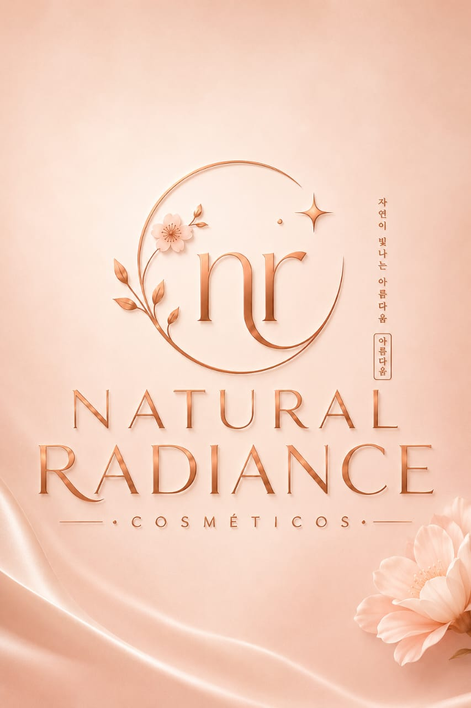
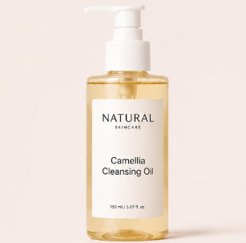
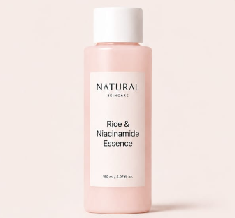
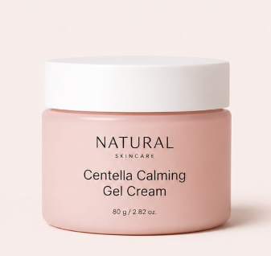

Fórmulas exclusivas desenvolvidas em Seul, combinando a sabedoria milenar do skincare coreano com a mais alta tecnologia biomédica.
DESCOBRIR LINHA GLOWLonge de apenas cobrir imperfeições, a Natural Radiance baseia-se no princípio fundamental da beleza coreana: a saúde celular profunda. Nossos produtos focam em restaurar a barreira lipídica, reter a hidratação intrínseca e proporcionar o cobiçado efeito Glass Skin (pele translúcida, radiante e viçosa como o vidro) de maneira natural e duradoura.
Todas as nossas formulações são livres de parabenos, sulfatos e fragrâncias sintéticas agressivas. Unimos ativos consagrados como a Niacinamida e o Ácido Hialurônico a extratos botânicos fermentados tradicionais da península coreana.

Óleo de limpeza luxuoso enriquecido com extrato purificado de Camélia da Ilha de Jeju. Remove maquiagem à prova d'água e impurezas sem ressecar.

Essência concentrada com 82% de água de arroz fermentado e Niacinamida a 5%. Uniformiza o tom da pele e estimula o brilho natural imediato.

Gel-creme ultraleve de absorção rápida formulado com Centelha Asiática e Madecassoside. Acalma a vermelhidão e repara a barreira cutânea.